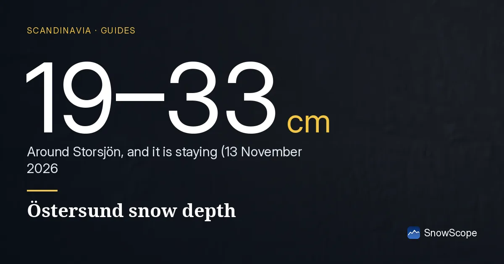

Östersund snow depth: 19 to 33 cm around Storsjön, and it is staying (13 November 2026)
Jämtland woke up to winter this week. Around Storsjön, weather stations recorded between 17 and 33 cm of snow on Friday morning—most of it fallen since Wednesday when the region still had bare ground. The snow came from two days of steady falls, and the forecast shows it will stay.
See the live snow forecast for Östersund in the SnowScope appSnow depth, powder alerts and the 3D map, free.
Where the snow sits deepest
The deepest cover is to the east. Rissna, 38 km from Östersund, measured 33 cm today; it had 10 cm yesterday and bare ground four days ago. Kaxås-Åflo to the north-west held 31 cm, with little change between yesterday and today, suggesting it caught the heaviest falls first.
On the lake itself, Norderön rose from 8 cm to 19 cm, and Marby on the southern shore went from 9 cm to 24 cm. Away from the main basin, the higher station at Höglekardalen at 595 m has only 17 cm, and Mälgåsen south of the lake also shows 17 cm.

How this ranks against 46 past Novembers
Snow lies on the ground at Östersund's elevation on 13 November in 38 of the past 46 winters, so today is not unusual. What is notable is the depth. The middle value across all those years is 6 cm; three winters in four had less than 15 cm. Today's 19 to 24 cm around the lake is roughly what the area normally sees near the start of December, when the typical cover is 17 cm.
The winter of 2023-24 holds the record for this date: 56 cm. Last winter had just 2 cm on 13 November. This year falls comfortably between those extremes, putting Jämtland ahead of its usual pace for mid-November but far from exceptional.
What the weekend brings
Saturday and Sunday will not erase the snow. Both days are dry, with lows around -4 °C and highs near 0 °C. The cover will settle slightly and harden as the nights drop below freezing.
Monday brings a small addition: roughly 3 to 4 cm of fresh snow is forecast, with temperatures hovering around 0 °C. The white layer should deepen rather than shrink before the new week turns milder.
What to watch on the ground
Snow fell on unfrozen earth. Forest roads and tracks will be soft and deep in places, so anyone driving or parking off main roads should move carefully and check the surface. The snow cover masks muddy and rutted ground beneath.
Storsjön remains far from freezing in mid-November. The lake's surface looks white where snow sits, but ice is nowhere near thick or strong. Walkers and skiers must stay on the shore; the lake is not safe.
The first real season
This is genuine winter snow, not a cold rain that melts by afternoon. Forest walks are suddenly different; sledding and kick-sled outings on forest paths are now possible. After a brown start to the season, the landscape has turned in two days.
The timing is slightly late. Many winters see their first cover by late October, so this arrival in mid-November shows a delayed start. Yet the depth is not abnormal for the date, and the forecast suggests the snow will stay and grow as December approaches.
Tips for skiers
- If you plan to ski or snowshoe in the forest around Storsjön, the snow on 13 November is real but only two days old. Rocks may still be near the surface under thin patches; walk and ski where others have already broken trail.
- Lake ice: do not step onto Storsjön. Snow on ice looks solid, but the ice itself is thin. Stay on the shore for now.
- Forest roads and forest tracks are soft. If you drive in, go slowly and park on firm ground near the main road; heavy vehicles can sink and get stuck.
- Expect the cover to settle and harden over the next week as temperatures stay below zero at night. Fresh snow on Monday may bring another 3 to 4 cm, so conditions will improve for winter activities.
About these numbers
Resort snow depths are the deepest snow on the resort's upper slopes on the date shown; they are estimates for an area, not a measurement at one point. Forecasts can change. Always read the official avalanche bulletin before going off-piste.
Cite this report
For research, teaching or the press: the numbers and charts are free to reuse under CC BY 4.0 with this citation.
SnowScope (2026), Östersund snow depth: 19 to 33 cm around Storsjön, and it is staying (13 November 2026), https://snowscope.app/blog/en/2026/11/ostersund-snow-depth-13-november-2026.html, accessed 2026-11-13
SnowScope (Atlas Labs). (2026, November 13). Östersund snow depth: 19 to 33 cm around Storsjön, and it is staying (13 November 2026). SnowScope snow reports. https://snowscope.app/blog/en/2026/11/ostersund-snow-depth-13-november-2026.html
BibTeX
@misc{snowscope2026ostersundsnowdepth13nove,
author = {{SnowScope (Atlas Labs)}},
title = {Östersund snow depth: 19 to 33 cm around Storsjön, and it is staying (13 November 2026)},
year = {2026},
month = nov,
howpublished = {\url{https://snowscope.app/blog/en/2026/11/ostersund-snow-depth-13-november-2026.html}},
note = {Published 2026-11-13 20:49 UTC; accessed 2026-11-13}
}· CC BY 4.0 · Methods, data and tools →
Follow Östersund
Free: a message when fresh snow is coming, and the forecast every morning.
More snow reports

Tahko opens on made snow as natural cover melts. Expect 7–8 cm in the next week; rain and wet snow likely. Only 2 lifts running now.

Sälen December skiing: 28 cm on a typical 15 December and 48 % of winters with 30 cm in mid-December, down from the 1980s; Trysil next door does better.

Saariselkä has 4 cm measured at its station on 13 November. About 22 cm is forecast for the next week. The usual depth here on 14 November is 17 cm.